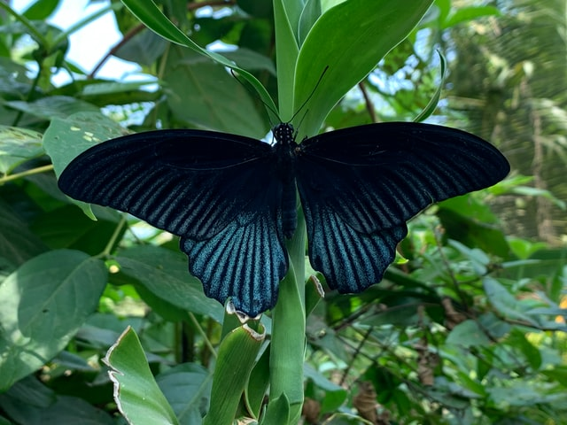
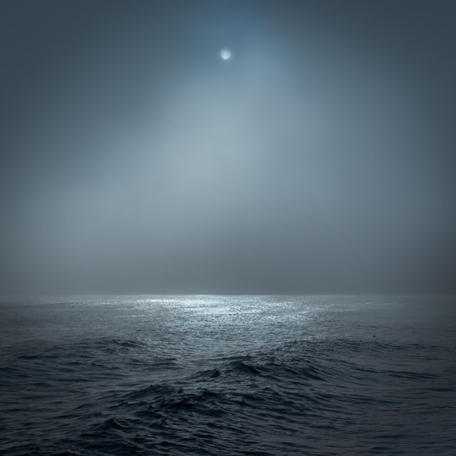
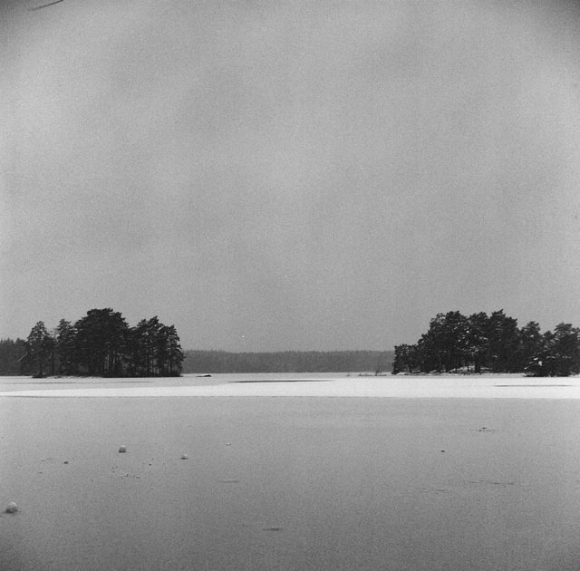
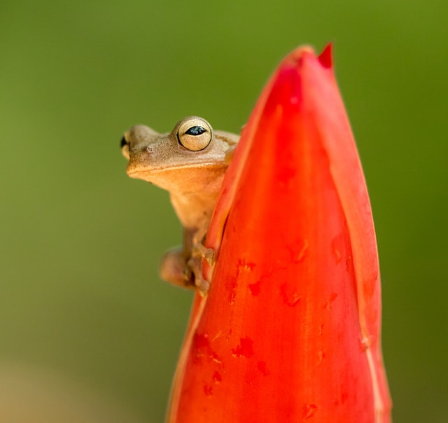
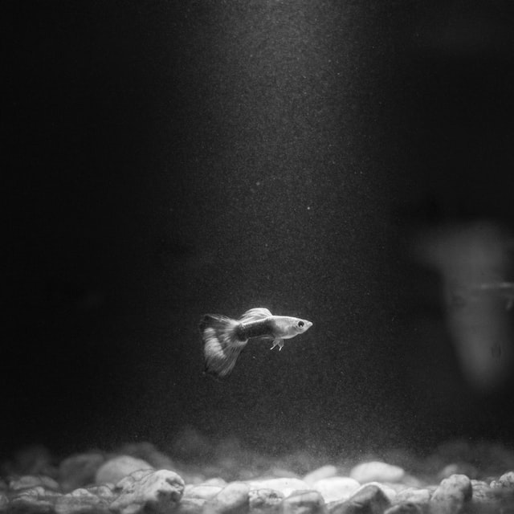

La mariposa revolotea
como si desesperara
en este mundo.

Anoche cubrí
mis hijos dormidos
y el ruido del mar.

Esta primavera en mi cabaña
Absolutamente nada
Absolutamente todo.

Pareciera que el sapo
Va a expeler
una nube.

Mil pequeños peces blancos
Como si hirviera
El color del agua.